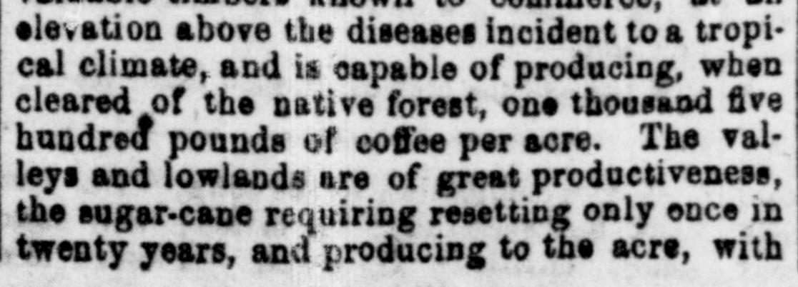
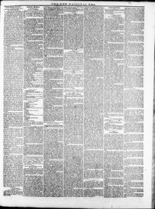

See the full pageVer la página completaLeys and lowlands are of great productiveness, p the sugar-cane requiringValles y tierras bajas son de gran productividad, la caña de azúcar requiriendo
The newspaper reported that the Dominican Republic possesses highly productive agricultural lands capable of yielding sugar-cane, tobacco, tropical fruits, and dyes with less labor than Louisiana beet sugar lands. It described the island as the gateway to the Caribbean Sea and noted that its sparse population is industrious, free of caste, and anxious to join their fortunes with the United States. Additionally, the excerpt detailed England's strategic military positions and island holdings around Cuba, the Gulf of Mexico, and the Caribbean Sea.El periódico refirió que la República Dominicana cuenta con terrenos agrícolas altamente ubérrimos capaces de producir caña de azúcar, tabaco, frutos tropicales y tintes con menor faena que las tierras remolacheras de Luisiana. Describió a la isla como la llave de acceso al mar Caribe y ponderó a su escasa población como laboriosa, exenta de prejuicios de casta y ansiosa por enlazar su destino al de los Estados Unidos. El texto desgranó además las posiciones militares estratégicas y las posesiones insulares que Inglaterra mantenía en torno a Cuba, el golfo de México y el mar Caribe.
FULL TEXT:TRADUCCIÓN:
San Domingo is admitted to be an island of unequalled fertility. That part of it known as the Republic of San Domingo contains an area of 22,000 square miles, or 12,800,000 acres. One-half of this is now covered with the most valuable timbers known to commerce, at an elevation above the diseases incident to a tropical climate, and is capable of producing, when cleared of its native forest, one thousand five hundred pounds of coffee per acre. The valleys and lowlands are of great productiveness, the sugar-cane requiring resetting only once in twenty years, and producing to the acre, with much less labor, nearly double that of the best sugar lands of Louisiana.Se admite que Santo Domingo es una isla de gran fertilidad. La parte de ella conocida como la República de Santo Domingo contiene un área de 22,000 millas cuadradas, o 12,800,000 acres. La mitad de esto está ahora cubierto con las maderas más valiosas conocidas al comercio, a una elevación por encima de las enfermedades propias de un clima tropical, y es capaz de producir, cuando se desmonte de su bosque nativo, mil quinientas libras de café por acre. Los valles y las tierras bajas son de gran productividad, requiriendo la caña de azúcar resiembra solo una vez en veinte años, y produciendo por acre, con mucho menos trabajo, casi el doble que las mejores tierras azucareras de Luisiana.
New National Era. Washington, D.C., May 18, 1871. Page 3.